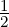
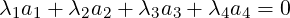
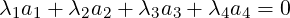
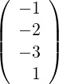
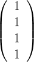
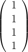
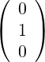
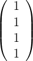
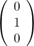

Figura 2.2: Una D región dada por restricciones
El objetivo de la programación lineal es resolver el problema de minimizar o maximizar una funciónf : ℝn → ℝ restringida a un dominio D ⊂ ℝn de manera que tanto f como D cumplan ciertascondiciones.
A la función f : ℝn → ℝ se le pide que sea lineal y a D que sea un conjunto definido pordesigualdades lineales.
Definición 1 (Problema de programación lineal). Un problema de programación lineal (PPL) es unproblema matemático que se puede expresar de la siguiente forma:
Hallar el máximo / mínimo de una función lineal, f(x) = c1x1 + c2 + x2 + ... + cnxn sujeto a unaserie de restricciones que podemos expresar como:
Donde xi,aij,bj ∈ ℝ para todo 1 ≤ i ≤ n, 1 ≤ j ≤ m.
Nótese que lo que expresa entre llaves corresponde a una restricción que puede ser hecha a través dedesigualdades o igualdades.
Se supone sin pérdida de generalidad que bj ≥ 0 con 1 ≤ j ≤ m (de no ser así bastaría conmultiplicar por (−1)).
Definición 2 (Formato Estándar de un P.P.L). Un P.P.L está en formato estándar si estáexpresado de la siguiente forma:
con xi ≥ 0 para 1 ≤ i ≤ n y bj ≥ 0 para 1 ≤ j ≤ m.
El problema de programación lineal puede expresarse de forma matricial como:
con b ≥ 0. De esta forma se tiene que
Dado cualquier P.P.L siempre es posible transformarlo en otro P.P.L equivalente (con las mismassoluciones) en formato estándar.
se añade una nueva variable sj ≥ 0 y se suma al primer miembro de la desigualdad de modo que esta quedaría de la forma
vuelve a introducirse una variable sj ≥ 0, pero en este caso se resta al primer miembro de la desigualdad de modo que la esta quedaría de la forma
A las variables sj se las denominan variables de holgura.
Si bj < 0 entonces multiplicamos por (−1) la restricción j-ésima o lo que es equivalente, la filaj-ésima de la matriz A y del vector de recursos b.
Esto es, los problemas
son equivalentes, siendo sus soluciones x = (x1,x2) y x′ = (x1,x2,s1,s2) respectivamente.
Para empezar, el dominio que define el problema (II) coincide con el que define el problema (I)cuando se tienen en cuenta sólo las variables x1, x2. Es decir, cuando se re... en ese subespacio.Además, las variables s1 y s2 no están presentes en la función objetivo, por lo que los valores de laf.o. en ambos problemas debe coincidir.
Sea x la solución factible de [P1]. Entonces x = (x1,x2) verifica que
por lo que tomando
entonces el vector x′ = (x1,x2,s1,s2) es solución de [P2].
De la misma forma se prueba que [P2] tiene las mismas soluciones que [P1].
Definición 3 (Solución factible). Dado un P.P.L [P]
se dice que x0 es solución factible para [P] si cumple que Ax0 = b y x0 ≥ 0.
Definición 4 (Región factible). El conjunto formado por todos los puntos factibles sedenomina región factible y se denotará por R.
Definición 5 (Solución óptima). Se dice que x0 ∈ ℝn es solución óptima de [P] si es factibley cumple que ctx ≥ ctx0 para todo x ∈ R.
Ejemplo 2. Una fábrica de dos tipos de juguetes: soldados y trenes. Cada soldado se vendepor 27 u.m. y se gastan 10 u.m. en materia prima para su fabricación. Cada tren se vende por21 u.m. y se necesitan para su fabricación 9 u.m. de materia prima. Cada tren eleva el coste deproducción en 10 u.m. y cada soldado en 14 u.m. Ambos juguetes necesitan un ensamblado yun acabado, siendo necesarias 1 h. para el acabado y 1 h para el ensamblado de cada tren y 1h. de ensamblado y 2h. de acabado para cada soldado.
Se disponen de 100 h. de acabados y 80 h. de ensamblado semanales. Además, en esta franjade tiempo sólo pueden venderse 40 soldados como máximo.
¿Cuántos soldados y trenes debemos producir por semana para obtener el máximo beneficio?
Solución 1. En primer lugar, encontramos las variables de interés:
máx 3s + 2t
Para resolverlo gráficamente, en primer lugar debemos dibujar todas las restricciones:
Una vez planteada las restricciones nos quedamos con su restricción, esto es:
Finalmente, para mejorar nuestra función objetivo debemos movernos de forma perpendicular a lagráfica de la función 3s + 2t, esto es, que debemos movernos en la dirección del vector gradiente de3s + 2t, esta dirección es (3,2), por tanto:
esto es:
Definición 6 (Restricción activa). Dado un P.P.L [P] se dice que una restricción está activa enx0 si se cumple por igualdad en x0.
En el ejemplo 2, la restricción s + t ≤ 80 está activa en x0 = (20,60) pues 20 + 60 = 80.
Podemos clasificar todos los P.P.L:
A continuación se ilustran los diferentes casos de forma gráfica.
METE GRÁFICOS
Definición 7 (Conjunto convexo). Un conjunto S ⊆ ℝn se dice convexo si dados x,y ∈ S setiene que λx + (1 − λ)y ∈ S para cualquier λ ∈ (0,1).
Demostración. Sean S1,S2,…,Sk conjuntos convexos de ℝn con k ∈ ℕ y denotemos
Dados x,y ∈ S entonces x,y ∈ Si para todo i = 1,…,k. Como cada Si es convexo,dado λ ∈ (0,1) se tiene que λx + (1 − λ)y ∈ Si para cada i = 1,…,k y por tantoλx + (1 − λ)y ∈ S.
Luego S es convexo. ___
Definición 8. Sea a ∈ ℝn con a≠0 y b ∈ ℝn, se define como:
Definición 9. Un polítopo es un conjunto definido por un número finito de intersecciones desemiespacios o hiperplanos. Si un polítopo es acotado entonces se denomina poliedro.
Observemos, que en un P.P.L la región factible es un polítopo.
Demostración. Teniendo en cuenta la definición 9 y la proposición 1 basta con demostrar quelos semiespacios e hiperplanos son conjuntos convexos.
Sean x,y ∈ H− = {x ∈ ℝn : atx ≤ b} y λ ∈ (0,1). Entonces atx,atx ≤ b y como λ > 0entonces
Sumando las ecuaciones (2.1) y (2.2) se tiene que
Luego λx + (1 −λ)y ∈ H− y por tanto es convexo. Para los conjuntos H+ y H se demuestra deforma similar. ___
Definición 10 (Punto extremo). Dado S ⊆ ℝn convexo, se dice que e ∈ S es un puntoextremo de S si no existen x,y ∈ S de forma que se puede expresar como e = λx+(1−λ)ypara algún λ ∈ (0,1).
INCLUIR REP GRAFICA
Definición 11 (Dirección de ilimitación (d.d.i.)). Dado S ⊆ ℝn convexo se dice que d ∈ ℝnes dirección de ilimitación de S si dado λ ≥ 0 entonces x0 + λd ∈ S para todo x0 ∈ S.
METE GRÁFICOS
Definición 12 (Dirección de ilimitación extrema). Dado S ⊆ ℝn convexo se dice que d ∈ ℝnes d.d.i. extrema de S si no existen d1,d2 ∈ S con d1≠d2 tal que d = λ1d1 + λ2d2 conλ1,λ2 > 0.
Proposición 3. Sea R la región factible de un P.P.L. entonces d es dirección de ilimitación deR si y sólo si Ad = 0 y d ≥ 0.
Demostración.
Luego Ad = 0.
y por tanto que x0 + λd ∈ R.
Antes de seguir con los P.P.L. debemos fijar dos hipótesis que son razonables. Dado un problema enformato estándar
siendo A una matriz de dimensiones m × n entonces
Es importante resaltar que la matriz A es aquella que resulta de añadir las variables homogéneas, loque se está pidiendo es que A sea de la forma
La hipótesis de rango completo asume que todas las filas de A son linealmente independientes. deno ser así podría ocurrir dos cosas:
El sistema no tiene solución, por lo que el problema es infactible.
De aquí, se deduce que m no puede ser mayor que n pues si fuese n < m entonces el rangomáximo de A sería n y eso significaría que existen filas de A linealmente dependientes dandoseasí alguno de los casos anteriores. Por tanto podemos suponer sin ningún problema quem ≤ n.
Dado un P.P.L. en formato estándar
siendo
Como rg(A) = rg(A|b) = m < n entonces el sistema es compatible indeterminado (existeninfinitas soluciones).
Nota 1. El caso m = n es trivial ya que implica que hay solución única y por tanto esa debeser la óptima.
Las columnas de A deben ser linealmente dependientes y por tanto existe m columnas linealmenteindependientes. Formemos pues una nueva submatriz B con m columnas de A linealmenteindependientes. Sin pérdida de generalidad, podemos suponer que tomamos las m primeras.Entonces el sistema se descompone como sigue:
| (2.3) |
El subsistema formado por BxB = b tiene solución única pues B es cuadrada con |B|≠0, lo quesignifica que si tomamos xN = 0 obtenemos una solución para el sistema original
Definición 13 (Solución básica). Dado un P.P.L. en formato estándar, a la solución única xBprocedente de la descomposición (2.3) se la denomina solución básica, y existen como máximo
Ejemplo 3. Consideremos el problema
Entonces se tiene que
y por tanto que una descomposición del tipo (2.3) es:
Quedando que BxB = b y por tanto xB =  . Luego xt = (17,0,0,10).
. Luego xt = (17,0,0,10).
Nota 2. Existen soluciones básicas no factibles, es decir, no toda solución básica sirve, sólolas soluciones básicas factibles.
Definición 14. En las mismas condiciones de antes, las variables xi que se corresponden conlas columnas de la base B se las denominan Variables básicas.
Al resto se las denominan variables no básicas (y siempre se igualan a cero).
Definición 15. Dada una solución básica, si alguno de sus componentes básicos es ceroentonces se lo denomina Solución básica degenerada.
Definición 16 (Soluciones básicas adyacentes). Dos soluciones básicas se dicen adyacentessi sus bases son iguales excepto en una columna.
Teorema 1. Sea Am×n con rg(A) = m < n. Sea R = {x : Ab = b,x ≥ 0}. Entonces setiene que x0 es solución básica factible si y sólo si x0 ∈ R y es punto extremo de R.
Demostración.
Supongamos pues que x0 no es punto extremo de R. Entonces existen x,y ∈ R con x≠y y λ ∈ (0,1) tal que x0 = λx + (1 − λ)y.
Al ser x0 solución básica, se puede expresar sin pérdida de generalidad como:
Observemos que se está teniendo en cuenta que x0 sea una solución básica degenerada. Además, en el caso de que x0 = 0, este punto es punto extremo de R pues:

pero λxi + (1 − λ)yi = 0 se verifica si y sólo si xi = yi = 0. Luego 0 es un punto extremo.
Consideremos entonces que x0i > 0 para 1 ≤ i ≤ p. Como x0 es solución básica, se verifica que las primeras p variables o columnas de A son linealmente independientes.
Además, x e y deben tener la siguiente expresión por el mismo argumento de antes:
Como x,y ∈ R entonces Ax = Ay = b y por tanto A(x − y) = 0. Esto es
esto es a1(x1 − y1) + a2(x2 − y2) +  + ap(xp − yp) = 0.
Como cada Ai son linealmente independientes entonces xi −yi = 0 para 1 ≤ i ≤ p. Es decir x = y llegando así a una contradicción. Luego x0 es un punto extremo de R.
Podemos suponer que p ≤ m sin problemas, pues en el caso de que m < p < n se cumple que a1,a2,…,ap son columnas de A linealmente dependientes puesto que rg(A) = m por lo que existen unos escalares no todos nulos tales que
Tomemos λ = (λ1,…,λm,…,λp,…,λn), entonces existe 𝜖 > 0 suficientemente pequeño tal que
y por construcción x0 =  x0+ + x0− con x0+≠x0−, por lo que x0 no sería punto extremo de R.
x0+ + x0− con x0+≠x0−, por lo que x0 no sería punto extremo de R.
Supongamos entonces que p ≤ m. Se tiene que si a1,a2,…,ap son columnas linealmente independientes de A entonces x0 sería solución básica.
Observemos que esto es cierto ya que en el caso de que a1,a2,…,ap fuesen linealmente dependientes, por el mismo razonamiento de antes existirían x0+,x0−∈ R con x0+≠x0− tal que x0 =  x0+ +x0− contradiciendo de esta forma que x0 sea punto extremo.
x0+ +x0− contradiciendo de esta forma que x0 sea punto extremo.
Por tanto a1,…,ap son linealmente independientes y por tanto x0 es solución básica factible.
¿Qué ocurre si x0 proviene de columnas linealmente dependientes donde hay un vector linealmenteindependiente?
Supongamos que am+1 = am+2 =  = an.
Solución 2. Sea x0 = ∈ R, como todas las componentes son positivas veamos silas columnas correspondientes, a1, a2, a3, a4 son linealmente independientes:

Sea λ =  y x0+ =  + 𝜖 con 𝜖 ≥ 0.
y x0+ =  + 𝜖 con 𝜖 ≥ 0.
Para que x0+ ∈ R ha de cumplirse . En primer lugar tenemos que
En segundo lugar, para que se cumpla x0+ ≥ 0, podemos calcular el mínimo 𝜖 ≥ 0 de maneraque se anule sólo una componente de x0+.
por lo que tomando 𝜖 = 1∕3 se tiene que x0+ = ∈ R y ahora las columnas de las queproviene x0+ son linealmente independientes:
a1, a2 y a3 ≡ y .
Antes de proseguir con el Teorema fundamental de la Programacion lineal (teorema 2) seríaconveniente desarrollar un ejemplo donde mostrar el método cosntructivo que demuestra elteorema.
Solución 3. Sea x0 = ∈ R, se tiene que una solución básica proviene de resolver
pero a1, a2, a3 son linealmente dependientes, luego existen λ1 = 1,λ2 = −1,λ3 = 0 ∈ ℝtal que
Sea λ = entonces x0+ = + 𝜖 tomando 𝜖 = se obtiene
que es solución factible y proviene de a1 y a2 que son linealmente dependientes por lo quedebemos repetir el proceso.
Sea λ′ =  entonces x0++ = + 𝜖 tomando 𝜖 = ,
entonces x0++ = + 𝜖 tomando 𝜖 = ,
Además se tiene que a1 es linealmente independiente. ¿Pero se puede decir que x0++ essolución básica? Pues sí, en concreto es básica degenerada, porque podemos encontrar m−1vectores de A que sean linealmente independientes y de manera que forman una base juntocon a1, sólo tomando que las componentes de dichas columnas sean ceros ya que se tendríaque el vector x0++ proviene de una base.
luego el x0++ procede de una base y es solución básica.
De la misma forma si el x0 original hubiese tenido dos vectores linealmente independientesbastaria con añadir columnas linealmente independientes hasta completar la base y considerardichas variables basicas nulas obteniendo asi soluciones basicas degeneradas.
Teorema 2 (Teorema Fundamental de la Programación Lineal). Dado un P.P.L.
Demostración.
Para el caso p = 0 entonces x0 = 0 es punto extremo y por tanto solución básica(degenerada). Supongamos entonces que x0i > 0 para 1 ≤ i ≤ p con 1 ≤ p ≤ n.
Basta con demostrar que las columnas de a a1,a2,…,ap asociadas a esos componentes son linealmente independientes para probar que x0 es solución básica.
Si a1,a2,…,ap fuesen linealmente dependientes entonces existen λ1,λ2,…,λp escalares no todos nulos tales que

Definimos λ = (λ1,…,λp,0,…,0) ∈ ℝn y tomamos
Como rg(A) = m se tendrá que repitiendo el procedimiento p − m veces obtendremos m componentes linealmente independientes, siendo por tanto x0 solución básica.

Sea λt = (λ1,…,λp,0,…,0) ∈ ℝn y definamos

Se puede elegir 𝜖0 > 0 tal que x𝜖0+,x𝜖0−∈ R. Esto es, Ax𝜖0+ = Ax𝜖0− = b y x𝜖0+,x𝜖0−≤ 0. Ahora bien,
así pues, las ecuaciones (2.4) y (2.5) si [P] es de maximizar o de minimizar respectivamente, contradicen que x0 sea la solución óptima.
así pues, las ecuaciones (2.6) y (2.7) si [P] es de maximizar o de minimizar respectivamente, contradicen que x0 sea la solución óptima.
Corolario 2. Si existe solución óptima finita entonces existe una solución óptima finita que esun punto extremo.
Si consideramos n = 100 variables y m = 30 restricciones y cada sistema básico tarda enresolverse 1 milisegundo, se tiene que:
El método SIMPLEX, el cual veremos en el próximo capítulo busca la solución óptima entre lassoluciones básicas pero sin calcularlas todas.